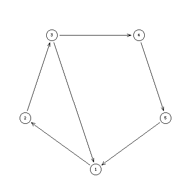

Round digraphs
{0,1}-valued digraph
Hyperkernel approach test, minimal odd circuits collapse fixpoint
A = {1,2,3,4,5}, L={0,1}

This example of a round digraph illustrates the fact that it is not sufficient in general to collapse minimal odd circuits from a digraph, in order to get a odd circuit free digraph. We have to iterate the procedure until no new odd circuit may be detected anymore.
In this example we have to iterate the minimal odd circuit detection twice. A first cicruit '_1_2_3_' is added the first time. The second time a further odd circuit: '__1_2_3__4_5_' is added. No further odd circuits may be added and the final hyper graph is the following:
A = {1, 2, 3, 4, 5, _1_2_3_, __1_2_3__5_4_}
S = {(1, 2), (1, _1_2_3), (1, __1_2_3__5_4_),
(2, 3), (2, _1_2_3), (2, __1_2_3__5_4_),
(3, 1), (3, 4), (3, _1_2_3), (3, __1_2_3__5_4_),
(4, 5), (4, __1_2_3__5_4_),
(5, 1), (5, _1_2_3),(5, __1_2_3__5_4_),
(_1_2_3_, 1),(_1_2_3_, 2),(_1_2_3_, 3),(_1_2_3_, 4),
(__1_2_3__5_4_, 1), (__1_2_3__5_4_, 2), (__1_2_3__5_4_, 3),(__1_2_3__5_4_, 4),(__1_2_3__5_4_, 5)}
The final hyper graph supports a unique dominant as well as absorbent kernel which is as expected the odd circuit '__1_2_3__4_5_'.